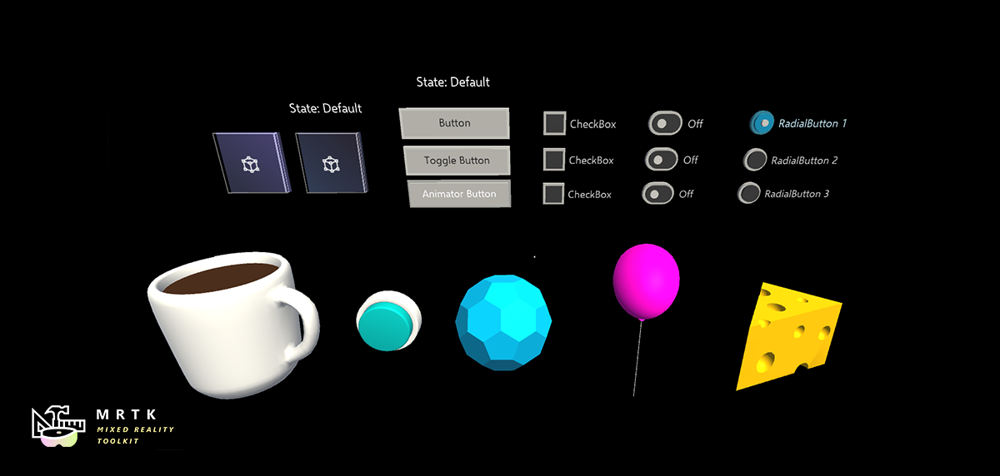
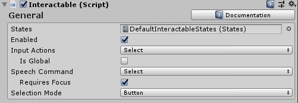
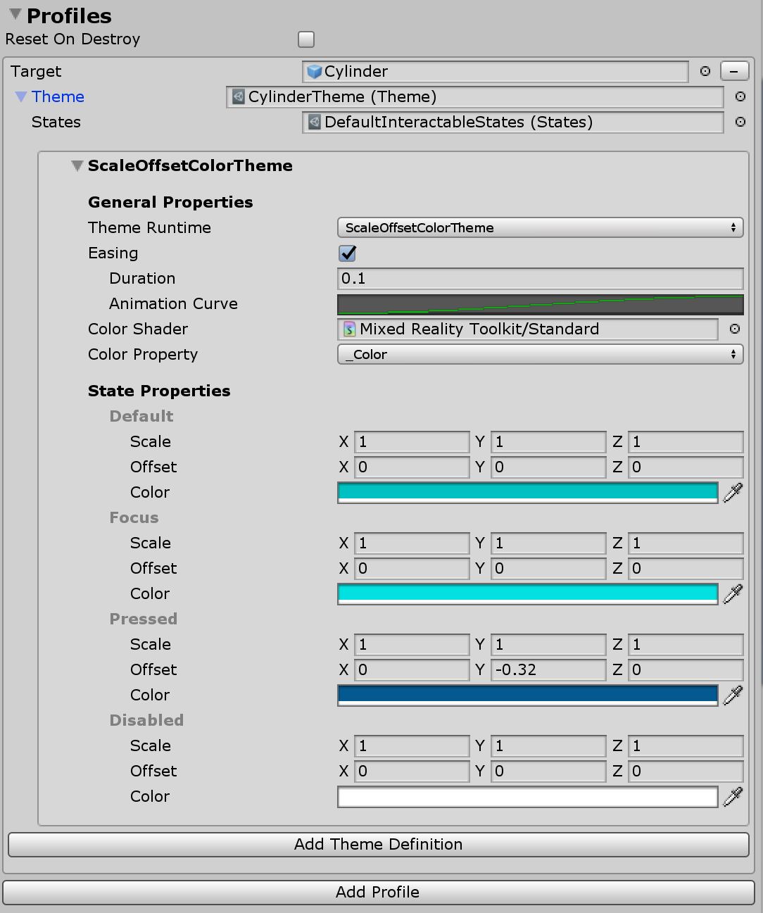
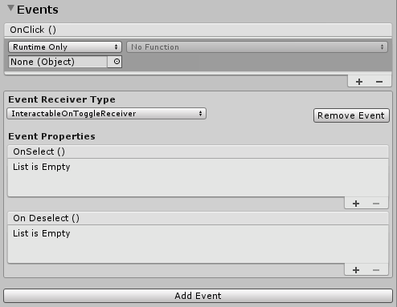

Interactable 可交互

Interactable)组件是一个集所有功能于一身的容器，可以使任何对象轻松地可交互并响应输入。Interactable作为一个全功能的输入，包括触摸、手部射线、语音等，并将这些交互输入到事件和视觉主题响应中。这个组件提供了一种简单的方法来制作按钮，改变焦点对象的颜色，等等。
如何配置 Interactable
该组件允许配置的三个主要部分:
- 常规输入配置
- 视觉主题 targeted against multiple GameObjects
- 事件 handlers
General input settings 常规输入设置

States
States 是一个 ScriptableObject 参数，它定义了Interactable 配置文件和视觉主题的交互阶段，如press或observed。
DefaultInteractableStates随MRTK一同发布，提供现成使用，是Interactable组件的默认参数。

DefaultInteractableStates资源包含四个状态，并利用InteractableStates状态模型实现。
Default: 什么都没有发生，这是最孤立的基本状态。
Focus: 对象被指向。这是一个单独的状态，当前没有设置其他的状态，但是它将超过默认的排序。
Press: 物体被指向，按下按钮或手。按下状态显示默认和焦点。此状态还将被设置为物理按下的回退状态。
Disabled: 按钮不应该是交互式的，视觉反馈会让用户知道，由于某些原因，这个按钮在这个时候是不可用的。理论上，禁用状态可以包含所有其他状态，但是当启用被关闭时，禁用状态胜过所有其他状态。
根据列表中的顺序为状态分配一个bit值(#)。
Note
一般建议在创建Interactable组件时使用DefaultInteractableStates.
然而，有17种可交互的状态可用来驱动主题，尽管其中一些是由其他组件驱动的。下面是一些具有内置功能的应用程序。
- Visited: Interactable 已被点击。
- Toggled: 按钮处于开关状态，或者维度索引为奇数。
- Gesture: 手或控制器被按下，并已从原来的位置移动。
- VoiceCommand: 使用语音命令来触发 Interactable.
- PhysicalTouch: 当前检测到一个触摸输入，使用
NearInteractionTouchable来启用. - Grab: 一只手当前正在抓取对象的范围内，使用
NearInteractionGrabbable来启用
Enabled
开关是否启用一个Interactable。这对应于代码中的Interactable.IsEnabled。
一个Interactable的 enabled 属性不同于通过GameObject/Component 例如 SetActive等等)。禁用GameObject或Interactable MonoBehaviour将禁用类中运行的所有东西，包括输入、视觉主题、事件等。通过Interactable.IsEnabled将禁用大多数输入处理，重新设置相关的输入状态。但是，该类仍然会运行每一帧并接收将被忽略的输入事件。这对于以禁用状态显示Interactable非常有用，可以通过可视主题来完成。典型的例子是等待所有必需输入字段完成的submit按钮。
Input Actions
从输入配置或控制器映射配置文件中选择input action， Interactable组件应该对其作出反应。
这个属性可以在运行时通过 Interactable.InputAction在代码中配置。
IsGlobal
如果为真，这将把组件标记为所选input action的全局输入监听器。默认行为为false，它将把输入限制到只有这个Interactable collider/GameObject。
这个属性可以在运行时通过Interactable.IsGlobal在代码中配置。
Speech Command
Speech command,来自MRTK语音命令配置文件，触发OnClick事件进行语音交互。
这个属性可以在运行时通过 Interactable.VoiceCommand在代码中配置.
Requires Focus
如果为真，语音命令将仅当且仅当它已经从指针获得焦点时才会激活Interactable。如果为false，那么Interactable将作为所选语音命令的全局侦听器。默认行为为true，因为在一个场景中很难组织多个全局语音侦听器。
这个属性可以在运行时通过 Interactable.VoiceRequiresFocus在代码中配置。
Selection Mode
此属性定义选择逻辑。当单击Interactable时，它将迭代到下一个Dimension级别。Dimension类似于rank，定义了输入(例如 焦点，按压等)。它们在定义开关状态或与按钮关联的其他多级状态时非常有用。当前Dimension级别由Interactable.DimensionIndex跟踪。
可供选择的模式有:
- Button - Dimensions = 1, 简单可点击 Interactable
- Toggle - Dimensions = 2, Interactable 在 on/off 状态之间开关
- Multi-dimension - Dimensions >= 3, 每次点击增加当前dimension等级+ 1。用于为列表定义按钮状态等。
Interactable还允许为每个Dimension定义多个主题。例如，当SelectionMode=Toggle时，一个主题可能在Interactable 被取消选中时应用，而另一个主题可能在组件被选中时应用。
当前的选择模式可以在运行时通过Interactable.ButtonMode查询。在运行时更新模式可以通过设置 Interactable.Dimensions属性来匹配所需的功能来实现。此外，可以通过Interactable.CurrentDimension访问当前维度，它适用于Toggle和Multi-Dimension模式。
Interactable 配置文件
配置文件是创建GameObject和视觉主题之间关系的项。配置文件定义了在状态发生变化时主题将操作什么内容。
主题很像素材。它们是可编写脚本的对象，包含一系列属性，这些属性将根据当前状态分配给对象。主题也是可重用的，可以跨多个Interactable UX对象分配。

事件
每个Interactable组件都有一个OnClick事件，该事件在组件被选中时触发。但是，Interactable可用于检测输入事件，而不仅仅是OnClick。
单击Add Event按钮添加一种新的事件接收者(Event Receiver)定义类型。添加后，选择所需的事件类型。
 )
)
有不同类型的 event receivers来响应不同类型的输入。MRTK附带以下一套开箱即用的receivers。
InteractableAudioReceiverInteractableOnClickReceiverInteractableOnFocusReceiverInteractableOnGrabReceiverInteractableOnHoldReceiverInteractableOnPressReceiverInteractableOnToggleReceiverInteractableOnTouchReceiver
A custom receiver can be created by making a new class that extends ReceiverBase.
可以通过创建一个扩展'ReceiverBase'的新类来创建自定义receiver。

开关 Event Receiver 的示例
Interactable Receivers
InteractableReceiver组件允许在源Interactable组件外部定义事件。InteractableReceiver将侦听由另一个Interactable触发的过滤事件类型。如果Interactable属性不是直接赋值的，那么Search Scope属性定义了InteractableReceiver侦听自身、父对象或子GameObject中的事件的方向。
InteractableReceiverList以类似的方式执行操作，但针对的是匹配事件的列表。
创建自定义事件
像视觉主题一样，事件可以被扩展以检测任何状态模式或公开功能。
自定义事件可以通过两种主要方式创建:
扩展
ReceiverBase类来创建一个自定义事件，该事件将显示在事件类型的下拉列表中。Unity事件是默认提供的，但是可以添加额外的Unity事件，或者可以设置事件来隐藏Unity事件。此功能允许设计人员与项目中的工程师一起创建自定义事件，设计人员可以在编辑器中设置该事件。扩展
ReceiverBaseMonoBehavior类，以创建一个完全自定义的事件组件，该组件可以驻留在Interactable或另一个对象上。ReceiverBaseMonoBehavior将引用Interactable来检测状态更改。
扩展ReceiverBase的例子
在MixedRealityToolkit.Examples下的CustomInteractablesReceiver类。显示关于Interactable的状态信息，并且是如何创建自定义Event Receiver的示例。
public CustomInteractablesReceiver(UnityEvent ev) : base(ev, "CustomEvent")
{
HideUnityEvents = true; //将Unity事件隐藏在receiver中——这意味着仅仅是代码
}
在创建自定义事件receiver时，可以使用以下方法覆盖/实现。ReceiverBase.OnUpdate()是一个抽象方法，可用于检测状态模式/转换。此外， ReceiverBase.OnVoiceCommand()和ReceiverBase.OnClick() 方法对于在选择Interactable时创建自定义事件逻辑非常有用。
public override void OnUpdate(InteractableStates state, Interactable source)
{
if (state.CurrentState() != lastState)
{
// 状态已经改变，做一些新的事情
lastState = state.CurrentState();
...
}
}
public virtual void OnVoiceCommand(InteractableStates state, Interactable source,
string command, int index = 0, int length = 1)
{
base.OnVoiceCommand(state, source, command, index, length);
// 语音命令调用，执行一些动作
}
public virtual void OnClick(InteractableStates state,
Interactable source,
IMixedRealityPointer pointer = null)
{
base.OnClick(state, source);
// 点击调用，执行一些操作
}
在inspector中显示自定义Event Receiver字段
ReceiverBase脚本使用 InspectorField属性在inspector中公开自定义属性。下面是一个带有工具提示和标签信息的Vector3自定义属性的例子。当选择Interactable GameObject并添加相关的Event Receiver类型时，此属性将在inspector中显示为可配置。
[InspectorField(Label = "<Property label>",Tooltip = "<Insert tooltip info>",Type = InspectorField.FieldTypes.Vector3)]
public Vector3 EffectOffset = Vector3.zero;
如何使用 Interactable
创建一个简单的按钮
.
一个人可以通过简单地添加Interactable组件到GameObject来创建一个简单的按钮，GameObject被配置为接收输入事件。它可以有一个碰撞器在它上面或在一个子节点上接收输入。如果使用Interactable和基于Unity UI的GameObject(游戏对象)，它应该在Canvas GameObject之下。
通过创建一个新的配置文件，分配GameObject本身并创建一个新的主题，让按钮更进一步。此外，使用OnClick事件使某些事情发生。
Note
使一个可按下按钮需要PressableButton组件。此外，需要PhysicalPressEventRouter组件将新闻事件引导到Interactable组件。
创建开关和Multi-Dimension按钮
开关按钮（Toggle button）
要使按钮可开关，请将Selection Mode字段更改为键入Toggle。在配置文件部分中，为Interactable打开时使用的每个配置文件添加了一个新的开关主题。
当SelectionMode 被设置为Toggle时，IsToggled复选框可用于在运行时初始化时设置控件的默认值。
CanSelect表示Interactable可以从off转到on，而CanDeselect表示相反的情况。

开发人员可以利用 SetToggled和IsToggled 接口通过代码获取/设置一个Interactable的开关状态。
// 如果使用 SelectionMode = Toggle (即 Dimensions == 2)
// 选择并打开Interactable
myInteractable.IsToggled = true;
// 获取是否Interactable被选中
bool isSelected = myInteractable.IsToggled;
开关按钮集合
通常情况下，有一个开关按钮列表，其中在任何给定时间只能激活一个按钮，也称为单设置或单选按钮等。
使用InteractableToggleCollection组件启用此功能。此控件确保在任何给定时间只打开一个Interactable。RadialSet 预制体也是一个很好的现成的起点。
创建一个自定义单选按钮组:
1)创建多个Interactable GameObjects/按钮 1)将每个Interactable设置为SelectionMode = Toggle， CanSelect = true， CanDeselect = false 1)在所有Interactables上创建一个空的父游戏对象，并添加InteractableToggleCollection组件 1)将所有Interactables添加到InteractableToggleCollection上的ToggleList中 1)设置InteractableToggleCollection.CurrentIndex 属性确定在启动时默认选择哪个按钮
多维按钮（Multi-Dimensional button）
多维选择模式用于创建顺序按钮，或具有两个以上步骤的按钮，如使用三个值控制速度，Fast (1x)、Faster (2x)或Fastest (3x)。
维度是一个数值，最多可以添加9个主题来控制每个速度设置按钮的文本标签或纹理，每个步骤使用不同的主题。
每次点击事件都会在运行时将DimensionIndex提升1，直到达到Dimensions值，然后循环将重置为0。
 开发人员可以获取
开发人员可以获取DimensionIndex 来确定当前处于活动状态的维度。
// 如果使用 SelectionMode = Multi-dimension (i.e Dimensions >= 3)
// 访问当前维度索引
int currentDimension = myInteractable.CurrentDimension;
// 将当前维度索引设置为2
myInteractable.CurrentDimension = 2;
// 将维度提升到下一个级别
myInteractable.IncreaseDimension();
在运行时创建 Interactable
Interactable可以很容易地添加到任何游戏对象在运行时。下面的示例演示如何使用视觉主题分配配置文件。
var interactableObject = GameObject.CreatePrimitive(PrimitiveType.Cylinder);
var interactable = interactableObject.AddComponent<Interactable>();
// /获取主题引擎InteractableColorTheme的默认配置
var newThemeType = ThemeDefinition.GetDefaultThemeDefinition<InteractableColorTheme>().Value;
// 为默认Interactable States中的每个状态定义一种颜色
newThemeType.StateProperties[0].Values = new List<ThemePropertyValue>()
{
new ThemePropertyValue() { Color = Color.black}, // Default
new ThemePropertyValue() { Color = Color.black}, // Focus
new ThemePropertyValue() { Color = Random.ColorHSV()}, // Pressed
new ThemePropertyValue() { Color = Color.black}, // Disabled
};
interactable.Profiles = new List<InteractableProfileItem>()
{
new InteractableProfileItem()
{
Themes = new List<Theme>()
{
Interactable.GetDefaultThemeAsset(new List<ThemeDefinition>() { newThemeType })
},
Target = interactableObject,
},
};
//强制点击Interactable
interactable.TriggerOnClick()
Interactable 事件通过代码
可以通过下面的示例代码向基础Interactable.OnClick事件添加一个操作。
public static void AddOnClick(Interactable interactable)
{
interactable.OnClick.AddListener(() => Debug.Log("Interactable clicked"));
}
使用Interactable.AddReceiver<T>()函数在运行时动态添加Event Receiver。
下面的示例代码演示了如何添加一个InteractableOnFocusReceiver，它侦听焦点的进入/退出，并进一步定义事件实例触发时要执行的操作代码。
public static void AddFocusEvents(Interactable interactable)
{
var onFocusReceiver = interactable.AddReceiver<InteractableOnFocusReceiver>();
onFocusReceiver.OnFocusOn.AddListener(() => Debug.Log("Focus on"));
onFocusReceiver.OnFocusOff.AddListener(() => Debug.Log("Focus off"));
}
下面的示例代码演示了如何添加一个InteractableOnToggleReceiver，它监听可切换的Interactables上选中/取消选中的状态转换，并进一步定义要在事件实例触发时要执行的操作代码。
public static void AddToggleEvents(Interactable interactable)
{
var toggleReceiver = interactable.AddReceiver<InteractableOnToggleReceiver>();
// 使interactable具有开关功能，从代码。
// 在gui编辑器中要简单得多
interactable.Dimensions = 2;
interactable.CanSelect = true;
interactable.CanDeselect = true;
toggleReceiver.OnSelect.AddListener(() => Debug.Log("Toggle selected"));
toggleReceiver.OnDeselect.AddListener(() => Debug.Log("Toggle un-selected"));
}